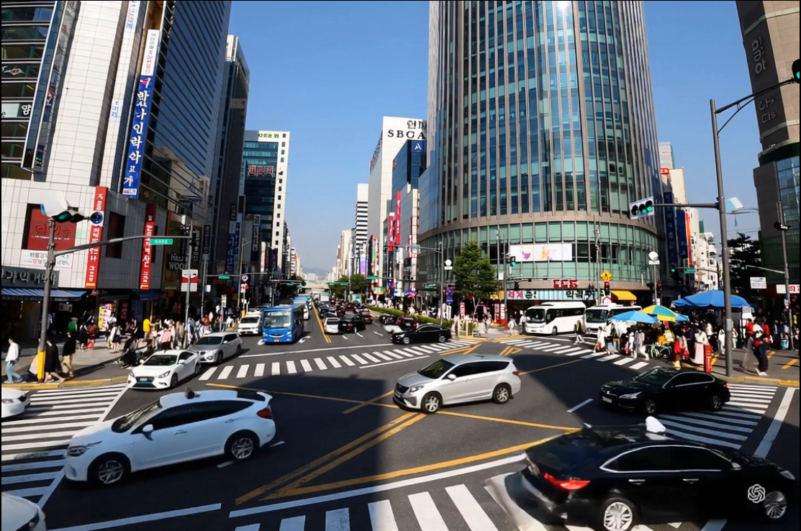
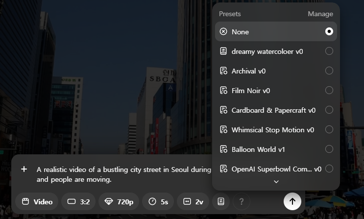
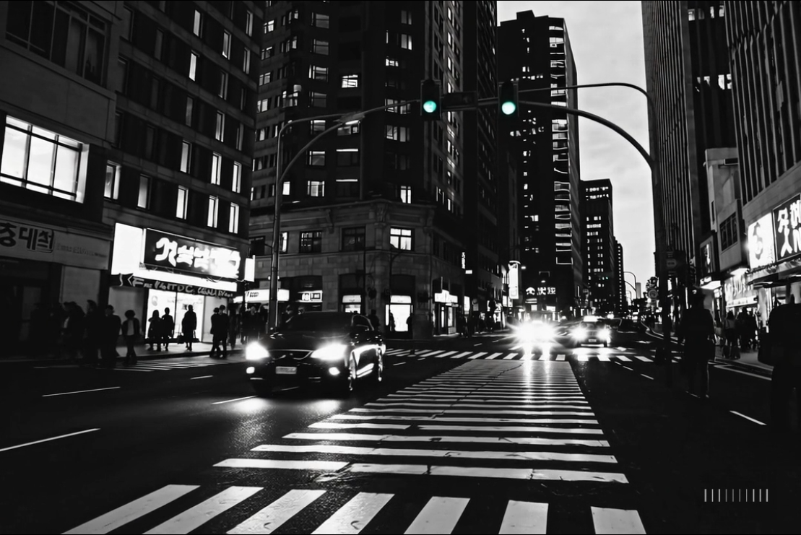
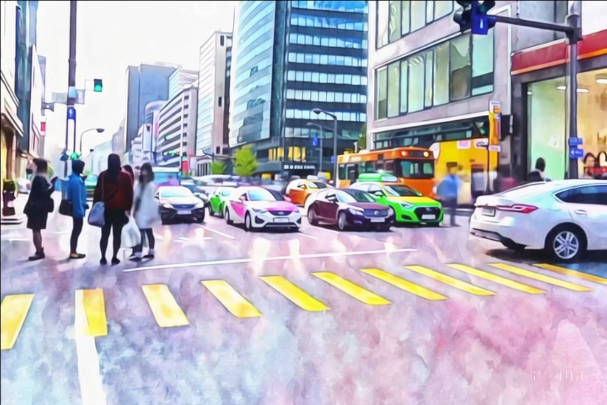

🎛️ Sora 프리셋으로 영상 분위기 180도 반전시키기
단 한 번의 클릭으로 평범한 영상을 전문가의 작품처럼 바꾸는 방법을 배워보세요. Sora의 강력한 프리셋 기능이 당신의 창의력에 날개를 달아줍니다.
프리셋 기능이란?
프리셋은 미리 정의된 스타일 템플릿으로, 기존 영상에 특정한 시각적 효과나 분위기를 일관되게 적용할 수 있는 기능입니다. 복잡한 설정 없이도 전문적인 결과물을 얻을 수 있습니다.
주요 특징
- 원클릭 적용: 복잡한 프롬프트 없이 버튼 하나로 스타일 변경
- 일관성 유지: 동일한 스타일을 여러 영상에 일관되게 적용
- 전문가 품질: 영화, 애니메이션 등 전문 분야의 스타일 재현
- 시간 단축: 시행착오 없이 빠른 결과물 획득
실습 예제: 도시 거리를 영화 스타일로
STEP 1: 기준 영상 준비하기 (Before)
먼저, 분위기를 반전시킬 원본 영상을 만듭니다. 평범하고 사실적인 도시 거리 영상을 예시로 사용하겠습니다.
기준 영상 프롬프트:
"A realistic video of a bustling city street in Seoul during the daytime, many cars and people are moving."

결과 영상 (Before): 활기찬 낮의 서울 거리 풍경
STEP 2: 프리셋 선택 및 적용하기 (After)
이제 생성된 영상에 Presets 버튼을 클릭하고, 원하는 스타일을 선택해 적용해봅니다. 여기서는 '네온 사이버펑크' 스타일을 적용해보겠습니다.

Sora 인터페이스에서 Presets 메뉴 위치

결과 영상 (After): 네온 사이버펑크 스타일로 변환된 서울 거리
나만의 프리셋 만들기 (실전 예제)
자신만의 독창적인 스타일을 프리셋으로 만들어 언제든 재사용하는 방법을 배워봅니다. 여기서는 '몽환적인 수채화' 스타일을 만들어 보겠습니다.
1단계: 나만의 스타일 정의하기
먼저, 만들고 싶은 영상의 스타일을 구체적으로 정의합니다.
- 색감: 파스텔 톤의 부드러운 색상
- 질감: 물감이 번지는 듯한 수채화 질감
- 윤곽선: 부드럽고 약간 흐릿한 윤곽선
- 분위기: 꿈속같이 평화롭고 몽환적인 느낌
2단계: 스타일 프롬프트 작성 및 저장
정의한 스타일을 Sora가 이해할 수 있도록 Presets 메뉴의 'Create New Preset'에서 상세한 프롬프트로 작성하고 저장합니다.
프리셋 이름: Dreamy Watercolor
"A dreamy and ethereal watercolor painting style. The colors are soft pastels that bleed into each other. Outlines are soft and slightly blurred. The entire scene has a painterly texture, like a wet-on-wet watercolor technique. The mood is peaceful and dreamlike."
3단계: 나만의 프리셋 적용하기
이제 1단계의 [활기찬 낮의 서울 거리 풍경] 영상에 방금 만든 'Dreamy Watercolor' 프리셋을 적용해 보세요.

현실의 거리가 한 폭의 몽환적인 수채화 작품으로 재탄생합니다. 이처럼 자신만의 스타일을 무한히 만들고 적용할 수 있습니다.
주의사항 및 PRO-TIP
⚠️ 주의사항
- 원본 영상 품질: 프리셋을 적용할 원본 영상의 품질이 좋을수록 더 나은 결과를 얻을 수 있습니다.
- 스타일 호환성: 모든 프리셋이 모든 영상에 잘 어울리는 것은 아닙니다. 여러 스타일을 시도해보세요.
- 과도한 적용 주의: 너무 강한 효과의 프리셋은 원본의 내용을 가릴 수 있습니다.
💡 PRO-TIP
- 스타일 라이브러리 구축: 자주 사용하는 스타일들을 프리셋으로 저장해 개인 라이브러리를 만드세요.
- 단계별 적용: 강한 효과보다는 여러 개의 약한 효과를 단계별로 적용하는 것이 자연스럽습니다.
- 참고 자료 활용: 영화, 애니메이션 등에서 영감을 얻어 프리셋을 만들어보세요.
- A/B 테스트: 같은 영상에 다른 프리셋을 적용해 비교해보며 최적의 스타일을 찾으세요.